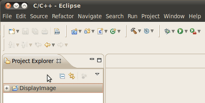

Using OpenCV with Eclipse (plugin CDT)
Prerequisites
Two ways, one by forming a project directly, and another by CMake Prerequisites
- Having installed Eclipse in your workstation (only the CDT plugin for C/C++ is needed). You can follow the following steps:
- Go to the Eclipse site
- Download Eclipse IDE for C/C++ Developers. Choose the link according to your workstation.
- Having installed OpenCV. If not yet, go here.
Making a project
Start Eclipse. Just run the executable that comes in the folder.
Go to File -> New -> C/C++ Project

Choose a name for your project (i.e. DisplayImage). An Empty Project should be okay for this example.

Leave everything else by default. Press Finish.
Your project (in this case DisplayImage) should appear in the Project Navigator (usually at the left side of your window).
Now, let’s add a source file using OpenCV:
Right click on DisplayImage (in the Navigator). New -> Folder.

Name your folder src and then hit Finish
Right click on your newly created src folder. Choose New source file :
Call it DisplayImage.cpp. Hit Finish

So, now you have a project with a empty .cpp file. Let’s fill it with some sample code (in other words, copy and paste the snippet below):
#include <opencv2/opencv.hpp> using namespace cv; int main( int argc, char** argv ) { Mat image; image = imread( argv[1], 1 ); if( argc != 2 || !image.data ) { printf( "No image data \n" ); return -1; } namedWindow( "Display Image", WINDOW_AUTOSIZE ); imshow( "Display Image", image ); waitKey(0); return 0; }
We are only missing one final step: To tell OpenCV where the OpenCV headers and libraries are. For this, do the following:
Go to Project>Properties
In C/C++ Build, click on Settings. At the right, choose the Tool Settings Tab. Here we will enter the headers and libraries info:
In GCC C++ Compiler, go to Includes. In Include paths(-l) you should include the path of the folder where opencv was installed. In our example, this is /usr/local/include/opencv.

If you do not know where your opencv files are, open the Terminal and type:
pkg-config --cflags opencv
For instance, that command gave me this output:
-I/usr/local/include/opencv -I/usr/local/include
Now go to GCC C++ Linker,there you have to fill two spaces:
First in Library search path (-L) you have to write the path to where the opencv libraries reside, in my case the path is: :
/usr/local/lib
Then in Libraries(-l) add the OpenCV libraries that you may need. Usually just the 4 first on the list below are enough (for simple applications) . In my case, I am putting all of them since I plan to use the whole bunch:
opencv_core opencv_imgproc opencv_imgcodecs opencv_highgui opencv_ml opencv_videoio opencv_video opencv_features2d opencv_calib3d opencv_objdetect opencv_flann

If you don’t know where your libraries are (or you are just psychotic and want to make sure the path is fine), type in Terminal :
pkg-config --libs opencv
My output (in case you want to check) was:
-L/usr/local/lib -lopencv_core -lopencv_imgproc -lopencv_highgui -lopencv_ml -lopencv_video -lopencv_features2d -lopencv_calib3d -lopencv_objdetect -lopencv_videoio -lopencv_imgcodecs -lopencv_flann
Now you are done. Click OK
Your project should be ready to be built. For this, go to Project->Build all
In the Console you should get something like

If you check in your folder, there should be an executable there.
Running the executable
So, now we have an executable ready to run. If we were to use the Terminal, we would probably do something like:
cd <DisplayImage_directory> cd src ./DisplayImage ../images/HappyLittleFish.png
Assuming that the image to use as the argument would be located in <DisplayImage_directory>/images/HappyLittleFish.png. We can still do this, but let’s do it from Eclipse:
Go to Run->Run Configurations
Under C/C++ Application you will see the name of your executable + Debug (if not, click over C/C++ Application a couple of times). Select the name (in this case DisplayImage Debug).
Now, in the right side of the window, choose the Arguments Tab. Write the path of the image file we want to open (path relative to the workspace/DisplayImage folder). Let’s use HappyLittleFish.png :

Click on the Apply button and then in Run. An OpenCV window should pop up with the fish image (or whatever you used).
Congratulations! You are ready to have fun with OpenCV using Eclipse.
V2: Using CMake+OpenCV with Eclipse (plugin CDT)
Say you have or create a new file, helloworld.cpp in a directory called foo :
#include <opencv2/opencv.hpp> using namespace cv; int main ( int argc, char **argv ) { Mat img(480, 640, CV_8U); putText(img, "Hello World!", Point( 200, 400 ), FONT_HERSHEY_SIMPLEX | FONT_ITALIC, 1.0, Scalar( 255, 255, 0 )); imshow("My Window", img); waitKey(); return 0; }
Create a build directory, say, under foo : mkdir /build. Then cd build.
Put a
CmakeLists.txtfile in build:PROJECT( helloworld_proj ) FIND_PACKAGE( OpenCV REQUIRED ) ADD_EXECUTABLE( helloworld helloworld.cxx ) TARGET_LINK_LIBRARIES( helloworld \f${OpenCV_LIBS} )
Run: cmake-gui .. and make sure you fill in where opencv was built.
Then click configure and then generate. If it’s OK, quit cmake-gui
Run
make -j4(the -j4 is optional, it just tells the compiler to build in 4 threads). Make sure it builds.Start eclipse. Put the workspace in some directory but not in foo or
foo\buildRight click in the Project Explorer section. Select Import And then open the C/C++ filter. Choose Existing Code as a Makefile Project.
Name your project, say helloworld. Browse to the Existing Code location
foo\build(where you ran your cmake-gui from). Select Linux GCC in the *”Toolchain for Indexer Settings”* and press Finish.Right click in the Project Explorer section. Select Properties. Under C/C++ Build, set the build directory: from something like
${workspace_loc:/helloworld}to${workspace_loc:/helloworld}/buildsince that’s where you are building to.- You can also optionally modify the Build command: from make to something like
make VERBOSE=1 -j4which tells the compiler to produce detailed symbol files for debugging and also to compile in 4 parallel threads.
- You can also optionally modify the Build command: from make to something like
Done!